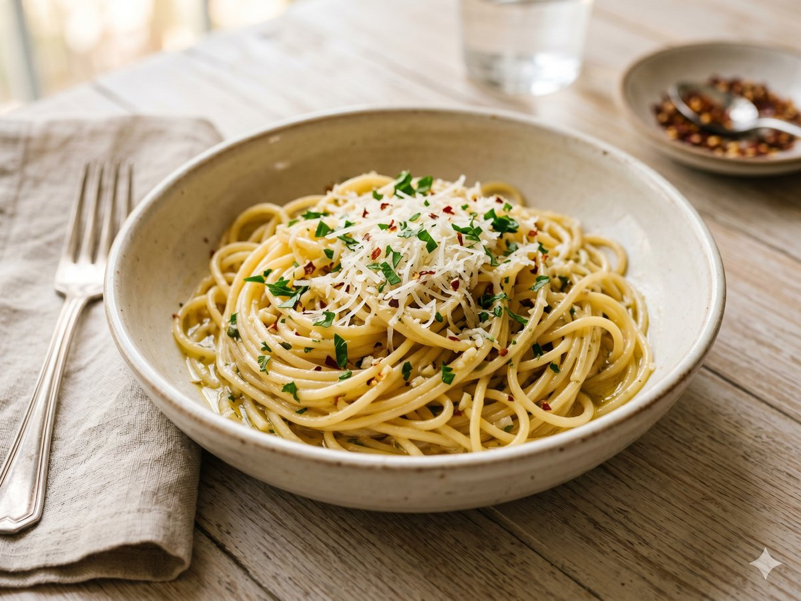

Garlic Butter Weeknight Pasta
A 20-minute pantry dinner — buttery, garlicky, and just spicy enough.
20 min · Serves 4 · Mise Kitchen

Ingredients
- 12 oz spaghetti
- 4 tablespoons butter
- 4 cloves garlic, minced
- 1/2 teaspoon red pepper flakes
- 1/2 cup grated parmesan
- 1/4 cup chopped parsley
- Salt and pepper to taste
Directions
- Boil the spaghetti in well-salted water until al dente, about 9 minutes, then drain and reserve a splash of the pasta water.
- Melt the butter in a large pan over medium heat, add the garlic and red pepper flakes, and cook until fragrant, about 1 minute.
- Toss the pasta in the garlic butter with a little reserved pasta water until glossy.
- Off the heat, stir in the parmesan and parsley, season, and serve.
An original recipe from Mise Kitchen. Free to save and cook.